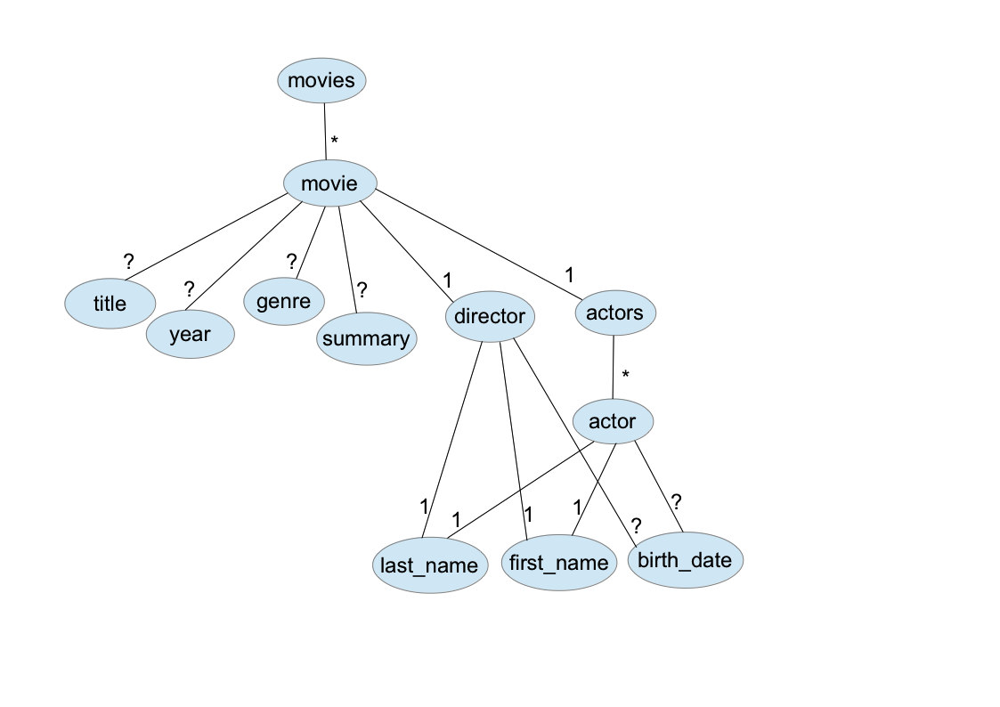

Ce TP est à réaliser avec BaseX sous linux.
Les requêtes sont exprimées sur le document movies_refs.xml,
Ecrire une requête qui permet d'obtenir des informations sur Sofia Coppola : son année de naissance, ses films, et pour chaque film le titre et l'année de sortie.
Le résultat de cette requête sera :
<artist>
<last_name>Coppola</last_name>
<first_name>Sofia</first_name>
<birth_date>1971</birth_date>
<movie>
<title>Lost in Translation</title>
<year>2003</year>
</movie>
<movie>
<title>Marie Antoinette</title>
<year>2006</year>
</movie>
</artist>
Reprendre la question précédente, mais en obtenant pour résultat une page html. Pour simplifier, la sortie ne contiendra pas d'information d'espace de noms, ni de codage de caractère, de version, ...
Nous verrons un peu plus tard des exemples de requêtes qui génèrent du XHTML avec un en-tête correcte, et prise en compte des espaces de noms.
Ecrire une requête qui donne chaque réalisateur et le nombre de films qu'il a fait.
Le résultat de la requête sera :
<directors>
<director>
<last_name>Cronenberg</last_name>
<first_name>David</first_name>
<birth_date>1943</birth_date>
<nb_movies>1</nb_movies>
</director>
...
<director>
<last_name>Coppola</last_name>
<first_name>Sofia</first_name>
<birth_date>1971</birth_date>
<nb_movies>2</nb_movies>
</director>
<director>
<last_name>Raimi</last_name>
<first_name>Sam</first_name>
<birth_date>1959</birth_date>
<nb_movies>1</nb_movies>
</director>
</directors>
Ecrire une requête qui permet de restructurer les informations
présentes dans le document, en supprimant les références (donc tous les attributs). Dans le document résultat,
on ne conserve pas l'information country et on regroupe tous les acteurs d'un
film sous un élément actors.
Le document en sortie aura pour schéma :
On utilise le document maisons.xml en entrée.
Donner une requête qui permet de calculer la surface totale de chaque maison. Quand deux éléments sont imbriqués,
alors seule la surface de l'élément externe est comptée. Par exemple, pour
<chambre surface-m2="28" fenetre="3"><alcove surface-m2="8"/></chambre>,
on n'utilise que la surface de la chambre.
Le résultat de la requête sera :
<maison id="1"> <surface-totale>125</surface-totale> </maison> <maison id="2"> <surface-totale>28</surface-totale> </maison> <maison id="3"> <surface-totale>57.5</surface-totale> </maison>
On utilise le document en entrée bookmarks.xml
Définir une fonction qui transforme 1 noeud bookmark passé en paramètre en 1 noeud élément div,tel que
p) qui contient un lien (élément a)
ayant pour référence l'url et pour contenu textuel, le titre s'il existe et à défaut l'url.Exemple :
<bookmark url="http://www.linux.org">
<title>Linux Online</title>
<description>Site de référence sur Linux</description>
</bookmark>
sera transformé en
<div>
<p>
<a href="http://www.linux.org">Linux Online</a>
</p>
<p>Site de référence sur Linux</p>
</div>
Définir une fonction qui transforme 1 noeud categorie passé en paramètre en 1 noeud div,tel que
h3Définir la requête principale qui permet d'obtenir ce résultat
Extrait de l'examen de décembre 2012
Dans cet exercice, on pose les requête sur le document genealogie.xml
Ecrire une fonction XQuery local:genealogie_desc qui prend en paramètre un élément personne, et qui renvoie un élément personne
contenant la généalogie descendante de la personne passée en paramètre.
Par exemple, l'élément personne contenant tous les descendants de Vincent BOUREL,
est obtenu par appel de la fonction :
local:genealogie_desc(//personne[nom="BOUREL" and prenom="Vincent"])